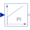
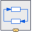

PIProportional-Integral controller |

|
Information
This information is part of the Modelica Standard Library maintained by the Modelica Association.
This blocks defines the transfer function between the input u and the output y as PI system:
1
y = k * (1 + ---) * u
T*s
T*s + 1
= k * ------- * u
T*s
If you would like to be able to change easily between different
transfer functions (FirstOrder, SecondOrder, ... ) by changing
parameters, use the general model class TransferFunction
instead and model a PI SISO system with parameters
b = {k*T, k}, a = {T, 0}.
Example:
parameter: k = 0.3, T = 0.4
results in:
0.4 s + 1
y = 0.3 ----------- * u
0.4 s
It might be difficult to initialize the PI component in steady state due to the integrator part. This is discussed in the description of package Continuous.
Parameters (5)
| k |
Value: 1 Type: Real Description: Gain |
|---|---|
| T |
Value: Type: Time (s) Description: Time Constant (T>0 required) |
| initType |
Value: Modelica.Blocks.Types.Init.NoInit Type: Init Description: Type of initialization (1: no init, 2: steady state, 3: initial state, 4: initial output) |
| x_start |
Value: 0 Type: Real Description: Initial or guess value of state |
| y_start |
Value: 0 Type: Real Description: Initial value of output |
Outputs (1)
| x |
Type: Real Description: State of block |
|---|
Connectors (2)
| u |
Type: RealInput Description: Connector of Real input signal |
|
|---|---|---|
| y |
Type: RealOutput Description: Connector of Real output signal |
Used in Examples (4)
|
Modelica.Electrical.Machines.Examples.AsynchronousInductionMachines Test example: AsynchronousInductionMachineSquirrelCage with losses |
|
|
Modelica.Magnetic.FundamentalWave.Examples.BasicMachines Asynchronous induction machine with squirrel cage and losses |
|
|
Modelica.Magnetic.QuasiStatic.FundamentalWave.Examples.BasicMachines.InductionMachines Induction machine with squirrel cage and losses |
|
|
Modelica.Fluid.Examples.DrumBoiler Complete drum boiler model, including evaporator and supplementary components |
Used in Components (3)
|
Modelica.Blocks.Examples.NoiseExamples.Utilities.Parts Simple position controller for actuator |
|
|
Modelica.Electrical.Machines.Utilities Voltage controller |
|
|  |
Modelica.Mechanics.MultiBody.Examples.Systems.RobotR3.Components P-PI cascade controller for one axis |